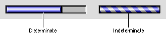

Progress Indicators
Progress indicators, also called "progress bars", are used to inform the user about duration or capacity. Two types are supported: the determinate progress indicator and the indeterminate progress indicator. Figure 2-45 shows an example of each indicator. Both types have a fixed height and a variable width.Figure 2-45 Progress indicators

The determinate progress indicator should be used in cases when the full scope of an operation can be determined. The bar moves from left to right as the operation progresses, so the user can easily see how much of the process has been completed. You might use a determinate progress indicator to show the progress of a file copying operation.
The indeterminate progress indicator is intended for those cases where the duration of a process is not easily determined. This indicator consists of a striped cylinder that spins to indicate an ongoing process. It provides less information to the user and therefore should be reserved for cases when the determinate indicator is clearly inappropriate. You might use an indeterminate progress indicator to let the user know that the application is in the process of attempting a communication connection or is waiting to receive data during file transfer.
You should consider switching from an indeterminate progress indicator to a determinate one, if a process reaches a point where its scope becomes determinable. For example, a remote file transfer may not become determinate until the application has had time to establish a connection and calculate the data transfer rate.
For information on laying out progress indicators in dialog boxes, see "Progress Indicator Layout" (page 79).